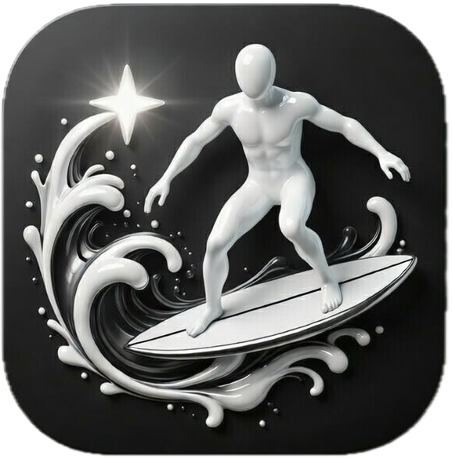

Open-source browser automation for AI agents. Any model. Real browser.
See it in action
Install and configure
Architecture overview
28 automation tools
vs. Puppeteer, Selenium, Playwright
An AI agent filling out a real job application — unassisted, in a real browser.
One of many use cases — full form navigation, field detection, and submission with zero human input.
Extension-based architecture. No headless browser. No synthetic profile.
All DOM reads and writes go through content scripts in Chrome's isolated world. CDP is only used for screenshots, network, and PDF. Page JS never sees the automation.
Your cookies, history, localStorage, and installed extensions are all present. No synthetic launch flags. The browser looks and behaves like a human's browser.
Sideload without user interaction via Chrome's --load-extension flag. Automation-ready from the command line.
Everything your AI agent needs to operate a real browser.
Create, close, and switch tabs. Navigate to URLs, go back/forward, reload. Stealth mode support for bot-sensitive sites.
3 toolsClick, type, scroll, hover, drag, press keys, upload files, select dropdowns, and handle dialogs. Full input simulation.
5 toolsAccessibility tree snapshots, element lookup by text, content extraction as clean markdown, computed CSS inspection.
5 toolsScreenshots (viewport, full page, element crop), PDF export, file downloads, clickable element highlighting.
3 toolsMonitor network traffic with JSONPath filtering, replay requests, read console output. Full Web Vitals and performance metrics.
3 toolsBatch form filling, drag-and-drop, and secure credential injection from environment variables. Agent never sees raw passwords.
3 toolsExecute JS in page context with optional AST-based security analysis. Blocks dangerous patterns before they run.
1 toolVerify text or elements are visible on the page. Built-in validation primitives for your agent's test workflows.
2 toolsList installed extensions, hot-reload unpacked extensions, inspect and modify localStorage and sessionStorage.
3 toolsBuilt for developers who don't compromise on trust.
No telemetry, no analytics, no tracking. SuperSurf doesn't collect, transmit, or store any personal data. Period.
All communication happens over a WebSocket bound to 127.0.0.1. Nothing leaves your machine through the extension.
Passwords and secrets are resolved from local environment variables. The AI agent only sees variable names, never raw values. Typed char-by-char with random delays.
Content scripts run in Chrome's isolated world. Page JavaScript cannot detect, observe, or interfere with automation activity.
The extension has zero runtime dependencies. Browser APIs only. No supply chain risk from third-party packages.
Every line of code — server and extension — is public on GitHub. Apache 2.0 licensed. Read it, audit it, fork it. No obfuscation, no hidden binaries.
Toggle cutting-edge capabilities per session.
After interactions, returns only the DOM changes instead of requiring a full re-read. Includes a confidence score so your agent knows when to request a full snapshot.
Replaces fixed navigation delays with adaptive DOM stability detection and network idle monitoring. Your agent stops guessing when a page is ready.
Replaces instant cursor teleportation with human-like Bezier trajectories, overshoot correction, and idle micro-movements. Based on real mouse dynamics research.
Two-layer defense for browser_evaluate: server-side AST parsing blocks dangerous patterns, extension-side Proxy membrane traps blocked API access before execution.
Enables the browser_storage tool for reading, writing, and clearing localStorage and sessionStorage on any page.
Isolated Chromium instances per agent session. Each profile gets its own cookies, storage, and browser state. The daemon spawns and manages Chromium processes with matchmaker-based connection routing and automatic crash recovery.
Extension-based automation vs. the alternatives.
| SuperSurf | Puppeteer | Selenium | Playwright | |
|---|---|---|---|---|
| Real browser profile | Yes | No | No | No |
| Cookies & history intact | Yes | Fresh profile | Fresh profile | Fresh profile |
| Interaction hidden from page JS | Isolated world | CDP leaks | WebDriver flag | CDP leaks |
| navigator.webdriver | Clean | Exposed | Exposed | Exposed |
| Secure credential fill | Env var isolation | Plaintext | Plaintext | Plaintext |
| MCP native | Yes | No | No | No |
| Extension as human signal | Yes | No extensions | No extensions | No extensions |
| Multi-agent sessions | Daemon + profiles | Single | Single | Single |
| Framework detection | 40+ frameworks | No | No | No |
Two ways to get up and running.
Recommended for most users
Install the MCP server
npm install -g supersurf-mcpAdd SuperSurf to your MCP client config and start automating
For development or offline use
Download the latest release .zip from GitHub
Extract the zip and open chrome://extensions
Enable Developer mode, click Load unpacked, and select the extracted folder
Install the MCP server
npm install -g supersurf-mcp